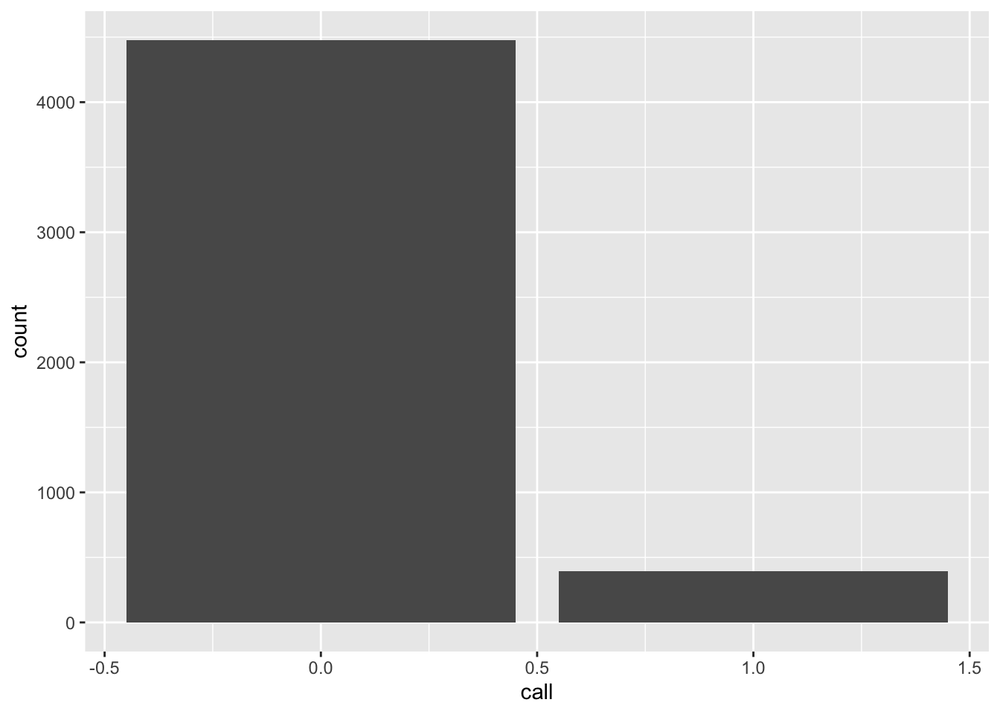
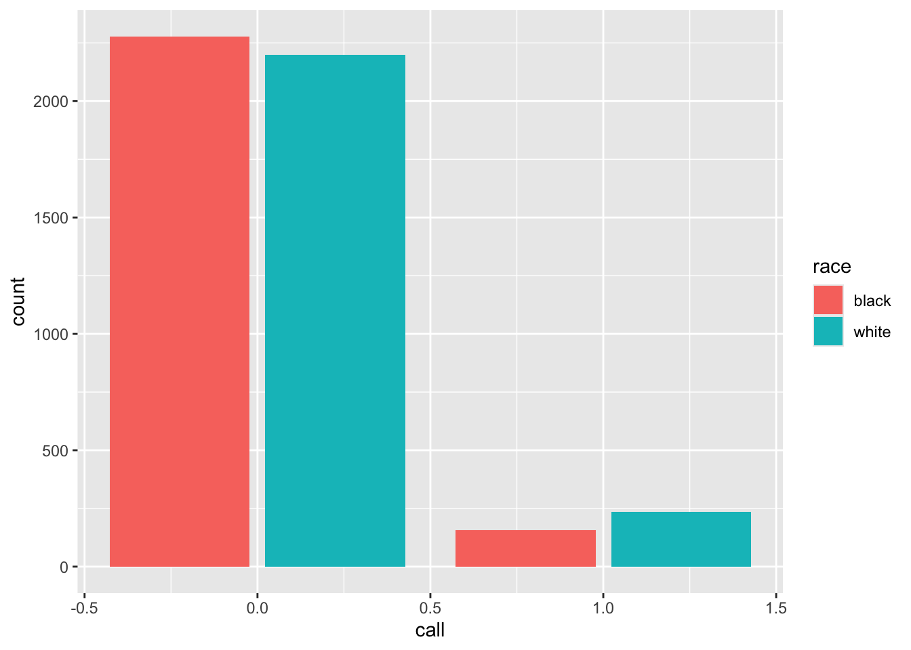

A R Basics
A.1 Get R and RStudio
First download and install R from https://cran.r-project.org.
Then, download and install RStudio (Desktop) from https://posit.co/products/open-source/rstudio/.
(You should have permission for both of these. If not, you may need to contact EOM IT.)
A.2 Read in data files
We can read data from many formats and many places, including from a local file or from the web. Many R packages contain their own data.
The code below requires the following packages to be loaded and attached:
library(dplyr)
library(ggplot2)
library(here)
library(lubridate)
library(magrittr)
library(readr)A.2.1 .csv
Data from the web (from the résumé audit experiment from Bertrand and Mullainathan (2004)):
df_resume <- read_csv("https://raw.githubusercontent.com/kosukeimai/qss/master/CAUSALITY/resume.csv")Then we can examine the dimensions of the new object named df_resume:
dim(df_resume)## [1] 4870 4So, df_resume has 4870 rows and 4 columns. We
can see the first few rows with
head(df_resume)## # A tibble: 6 × 4
## firstname sex race call
## <chr> <chr> <chr> <dbl>
## 1 Allison female white 0
## 2 Kristen female white 0
## 3 Lakisha female black 0
## 4 Latonya female black 0
## 5 Carrie female white 0
## 6 Jay male white 0For data from a local file, if data mydata.csv are in subdirectory /data/,
my_data_path <- here("data", "mydata.csv")
df <- read_csv(my_data_path)See
here
for more detail on how to use here() to create paths.
A.2.2 .xlsx
Use package readxl and function read_excel(). To read the second sheet from
a multi-sheet spreadsheet, add an argument like read_excel(..., sheet = 2).
A.2.3 Box
To read a file directly from box, we use the boxr package. To do so,
- Have Nathan add you as Box RStudio App collaborator
- Go to dcgov.box.com. At the bottom left, click “Dev Console”
- Click on RStudio Access
- Click the Configuration tab
Here you should see a client_id and client_secret that you can copy.
Then, run at the R Console
library(boxr)
box_auth(client_id = "<INSERT ID STRING HERE>",
client_secret = "<INSERT SECRET STRING HERE>")replacing the strings with the information from the Configuration tab.
If R prompts you to update the Renviron file to store this information for next time, you may do so.
Then, your .R file that reads the data should include
library(boxr)
box_auth()
# (arguments can be empty, if credentials stored in Renviron)
df <- box_read("791112121820")
# (where 791112121820 is the Box ID for a .csv to read)For more information, see the boxr vignette.
A.3 Pipes
Pipe operators make it easier for humans to follow a code chunk, and they allow
us to string together a sequence of operations into a “pipeline”. The standard
pipe from package magrittr is most common (%>%), but there are others,
including a native R pipe (|>).
The pipe simply takes the argument on its left and passes it as the first
argument of the function to its right. So, if I have function f() to which I
will pass arguments x and y (in that order), I can write
f(x, y)Using a pipe, I can equivalently write either
x %>% f(y)or
x |> f(y)A.4 Rename variables
Variable names should adhere to good practices.
The rename() function in dplyr can rename several variables at once:
df <- df %>% rename(new_var_name_1 = `Bad, old, long, spacey name`,
new_var_name_2 = "inconsistentsquishedvarname",
new_var_name_3 = starts_with("Unique string old name starts with"))To automatically clean up all the names in a dataframe, the janitor package can help:
df <- df %>% clean_names()A.5 Create a New Variable
Suppose I want to create a new variable and attach it to the data frame (i.e., to update the data frame to include the new variable). Mechanically, in the tidyverse I overwrite the old data frame with the new one. Sometimes we want to use a new name for the augmented data frame, but not when we create each new variable.
A.5.1 Create a “wave ID”
A “wave ID” is a variable that is constant for every row in the data set. Suppose that the resume data were all from “wave 3” of a larger study. To identify them as such,
df_resume <- df_resume %>% mutate(wave = 3)A.5.2 Create a primary key
A “primary key” is a variable that uniquely identifies each row in the data set. To create a primary key or “ID variable”,
df_resume <- df_resume %>% mutate(id_var = row_number())A.5.3 Transform an existing variable
Below, we use the mutate() function with the character variable sex, which
has levels female and male, to create a logical TRUE/FALSE variable
indicating whether the résumé had a putatively female name at the top:
df_resume <- df_resume %>% mutate(isFemale = sex == "female")Now, df_resume has 7 columns:
head(df_resume)## # A tibble: 6 × 7
## firstname sex race call wave id_var isFemale
## <chr> <chr> <chr> <dbl> <dbl> <int> <lgl>
## 1 Allison female white 0 3 1 TRUE
## 2 Kristen female white 0 3 2 TRUE
## 3 Lakisha female black 0 3 3 TRUE
## 4 Latonya female black 0 3 4 TRUE
## 5 Carrie female white 0 3 5 TRUE
## 6 Jay male white 0 3 6 FALSENote that mutate() needs a dataframe as its first argument. Above, we pass
df_resume to mutate() using the pipe.
A.5.4 Create a sum of from subset of variables
Below, we select a subset of columns from df_resume, take the sum across them, and add the sum as a new variable. Here, we locate the new variable right after those columns that it summed.
df_resume %>%
mutate(new_sum = rowSums(select(df_resume, call:id_var))) %>%
relocate(new_sum, .after = id_var)## # A tibble: 4,870 × 8
## firstname sex race call wave id_var new_sum isFemale
## <chr> <chr> <chr> <dbl> <dbl> <int> <dbl> <lgl>
## 1 Allison female white 0 3 1 4 TRUE
## 2 Kristen female white 0 3 2 5 TRUE
## 3 Lakisha female black 0 3 3 6 TRUE
## 4 Latonya female black 0 3 4 7 TRUE
## 5 Carrie female white 0 3 5 8 TRUE
## 6 Jay male white 0 3 6 9 FALSE
## 7 Jill female white 0 3 7 10 TRUE
## 8 Kenya female black 0 3 8 11 TRUE
## 9 Latonya female black 0 3 9 12 TRUE
## 10 Tyrone male black 0 3 10 13 FALSE
## # … with 4,860 more rowsA.6 Recode a variable’s values
Instead of creating a new variable as above, we can use mutate() and case_when() to recode a variable. Suppose we wanted to code race:
df_resume %>% mutate(
race = case_when(
race == "white" ~ "race_wh", # recode "white" to "race_wh"
race == "black" ~ "race_bl", # recode "black" to "race_bl"
race == "missing" ~ NA_character_, # recode "missing" to (character) NA
TRUE ~ race # recode any other value to original value of race
)
)## # A tibble: 4,870 × 7
## firstname sex race call wave id_var isFemale
## <chr> <chr> <chr> <dbl> <dbl> <int> <lgl>
## 1 Allison female race_wh 0 3 1 TRUE
## 2 Kristen female race_wh 0 3 2 TRUE
## 3 Lakisha female race_bl 0 3 3 TRUE
## 4 Latonya female race_bl 0 3 4 TRUE
## 5 Carrie female race_wh 0 3 5 TRUE
## 6 Jay male race_wh 0 3 6 FALSE
## 7 Jill female race_wh 0 3 7 TRUE
## 8 Kenya female race_bl 0 3 8 TRUE
## 9 Latonya female race_bl 0 3 9 TRUE
## 10 Tyrone male race_bl 0 3 10 FALSE
## # … with 4,860 more rowsThere is also recode(), but its lifecycle status is “questioning”:
df_resume %>% mutate(
race = recode(race,
"white" = 0,
"black" = 1
)
)## # A tibble: 4,870 × 7
## firstname sex race call wave id_var isFemale
## <chr> <chr> <dbl> <dbl> <dbl> <int> <lgl>
## 1 Allison female 0 0 3 1 TRUE
## 2 Kristen female 0 0 3 2 TRUE
## 3 Lakisha female 1 0 3 3 TRUE
## 4 Latonya female 1 0 3 4 TRUE
## 5 Carrie female 0 0 3 5 TRUE
## 6 Jay male 0 0 3 6 FALSE
## 7 Jill female 0 0 3 7 TRUE
## 8 Kenya female 1 0 3 8 TRUE
## 9 Latonya female 1 0 3 9 TRUE
## 10 Tyrone male 1 0 3 10 FALSE
## # … with 4,860 more rowsA.7 Treat dates as dates
When we have dates stored as character strings, we transform them to dates. First, simulate some date data:
# Simulate date data:
df_resume <- df_resume %>%
mutate(
dob = paste0(sample(1:12, n(), replace = TRUE),
"/",
sample(1:28, n(), replace = TRUE),
"/",
sample(1900:2000, n(), replace = TRUE))
)
head(df_resume, 3)## # A tibble: 3 × 8
## firstname sex race call wave id_var isFemale dob
## <chr> <chr> <chr> <dbl> <dbl> <int> <lgl> <chr>
## 1 Allison female white 0 3 1 TRUE 7/20/1981
## 2 Kristen female white 0 3 2 TRUE 2/24/1979
## 3 Lakisha female black 0 3 3 TRUE 8/1/1921The tidyverse includes the lubridate package. If you know the format of the character strings, there are many shortcut parsers like mdy(). Below, we recode character dates to be of date type:
df_resume %>% mutate(
dob_date = mdy(dob)
)## # A tibble: 4,870 × 9
## firstname sex race call wave id_var isFemale dob dob_date
## <chr> <chr> <chr> <dbl> <dbl> <int> <lgl> <chr> <date>
## 1 Allison female white 0 3 1 TRUE 7/20/1981 1981-07-20
## 2 Kristen female white 0 3 2 TRUE 2/24/1979 1979-02-24
## 3 Lakisha female black 0 3 3 TRUE 8/1/1921 1921-08-01
## 4 Latonya female black 0 3 4 TRUE 3/15/1955 1955-03-15
## 5 Carrie female white 0 3 5 TRUE 10/7/1949 1949-10-07
## 6 Jay male white 0 3 6 FALSE 5/12/1901 1901-05-12
## 7 Jill female white 0 3 7 TRUE 2/1/1941 1941-02-01
## 8 Kenya female black 0 3 8 TRUE 2/4/1980 1980-02-04
## 9 Latonya female black 0 3 9 TRUE 12/15/1946 1946-12-15
## 10 Tyrone male black 0 3 10 FALSE 5/12/1974 1974-05-12
## # … with 4,860 more rowsIf we aren’t sure of the format, or there are several, we use parse_date_time() and specify several “orders” of date format. parse() functions do their best to use the information in “orders”. Below, "dmy" alone would recode only the ambiguous dates, assuming they were in day-month-year order. Adding "%m/%d/%Y" instructs parse() to look for month/day/year formats. Finding many that are unambiguously that format, it assumes that format for the new variable.
df_resume %>% mutate(
dob_date = as_date(
parse_date_time(dob,
orders = c("dmy", "%m/%d/%Y"))
)
)## # A tibble: 4,870 × 9
## firstname sex race call wave id_var isFemale dob dob_date
## <chr> <chr> <chr> <dbl> <dbl> <int> <lgl> <chr> <date>
## 1 Allison female white 0 3 1 TRUE 7/20/1981 1981-07-20
## 2 Kristen female white 0 3 2 TRUE 2/24/1979 1979-02-24
## 3 Lakisha female black 0 3 3 TRUE 8/1/1921 1921-08-01
## 4 Latonya female black 0 3 4 TRUE 3/15/1955 1955-03-15
## 5 Carrie female white 0 3 5 TRUE 10/7/1949 1949-10-07
## 6 Jay male white 0 3 6 FALSE 5/12/1901 1901-05-12
## 7 Jill female white 0 3 7 TRUE 2/1/1941 1941-02-01
## 8 Kenya female black 0 3 8 TRUE 2/4/1980 1980-02-04
## 9 Latonya female black 0 3 9 TRUE 12/15/1946 1946-12-15
## 10 Tyrone male black 0 3 10 FALSE 5/12/1974 1974-05-12
## # … with 4,860 more rowsA.7.1 Make an age variable
To make an age variable from the year component,
df_resume %>% mutate(
age = 2023 - year(dob_date)
)## # A tibble: 4,870 × 10
## firstname sex race call wave id_var isFemale dob dob_date age
## <chr> <chr> <chr> <dbl> <dbl> <int> <lgl> <chr> <date> <dbl>
## 1 Allison female white 0 3 1 TRUE 7/20/1981 1981-07-20 42
## 2 Kristen female white 0 3 2 TRUE 2/24/1979 1979-02-24 44
## 3 Lakisha female black 0 3 3 TRUE 8/1/1921 1921-08-01 102
## 4 Latonya female black 0 3 4 TRUE 3/15/1955 1955-03-15 68
## 5 Carrie female white 0 3 5 TRUE 10/7/1949 1949-10-07 74
## 6 Jay male white 0 3 6 FALSE 5/12/1901 1901-05-12 122
## 7 Jill female white 0 3 7 TRUE 2/1/1941 1941-02-01 82
## 8 Kenya female black 0 3 8 TRUE 2/4/1980 1980-02-04 43
## 9 Latonya female black 0 3 9 TRUE 12/15/19… 1946-12-15 77
## 10 Tyrone male black 0 3 10 FALSE 5/12/1974 1974-05-12 49
## # … with 4,860 more rowsFor more precision, the participants’ age today,
df_resume %>% mutate(
age = as.numeric(
interval(dob_date, today()),
"years")
)## # A tibble: 4,870 × 10
## firstname sex race call wave id_var isFemale dob dob_date age
## <chr> <chr> <chr> <dbl> <dbl> <int> <lgl> <chr> <date> <dbl>
## 1 Allison female white 0 3 1 TRUE 7/20/1981 1981-07-20 41.7
## 2 Kristen female white 0 3 2 TRUE 2/24/1979 1979-02-24 44.1
## 3 Lakisha female black 0 3 3 TRUE 8/1/1921 1921-08-01 102.
## 4 Latonya female black 0 3 4 TRUE 3/15/1955 1955-03-15 68.0
## 5 Carrie female white 0 3 5 TRUE 10/7/1949 1949-10-07 73.5
## 6 Jay male white 0 3 6 FALSE 5/12/1901 1901-05-12 122.
## 7 Jill female white 0 3 7 TRUE 2/1/1941 1941-02-01 82.1
## 8 Kenya female black 0 3 8 TRUE 2/4/1980 1980-02-04 43.1
## 9 Latonya female black 0 3 9 TRUE 12/15/19… 1946-12-15 76.3
## 10 Tyrone male black 0 3 10 FALSE 5/12/1974 1974-05-12 48.9
## # … with 4,860 more rowsA.7.2 Make a month-count variable
We may have dates accurate to the day, but we want a count of which month of
participation it is for each participant. Assume that each firstname in the
resume data represents a participant, and each dob_date represents an event
for that participant that we care about. We want to produce a variable that is 0 for the first month of participation (say, February), and 2 for the month two months later (April), regardless of whether the month between (March) appears in the data, and even if participants start or finish participation at very different times.9
Below, we group by firstname, then round all months to the first date of the month, then count those months (within firstname). We show the first three rows for each participant.
df_resume %>%
# Ensure ranking _within_ firstname:
group_by(firstname) %>%
# Round all months to first date of the month, then count:
mutate(dob_month = floor_date(dob_date, unit = "month"),
dob_month_count = (min(dob_month) %--% dob_month) %/% months(1)
) %>%
# For presentation, select, arrange, and slice:
select(firstname, dob, dob_date, dob_month, dob_month_count) %>%
arrange(firstname, dob_month_count) %>%
slice(1:3)## # A tibble: 108 × 5
## # Groups: firstname [36]
## firstname dob dob_date dob_month dob_month_count
## <chr> <chr> <date> <date> <dbl>
## 1 Aisha 5/4/1900 1900-05-04 1900-05-01 0
## 2 Aisha 8/28/1901 1901-08-28 1901-08-01 15
## 3 Aisha 7/19/1902 1902-07-19 1902-07-01 26
## 4 Allison 3/5/1900 1900-03-05 1900-03-01 0
## 5 Allison 6/15/1900 1900-06-15 1900-06-01 3
## 6 Allison 9/17/1900 1900-09-17 1900-09-01 6
## 7 Anne 10/26/1900 1900-10-26 1900-10-01 0
## 8 Anne 4/19/1901 1901-04-19 1901-04-01 6
## 9 Anne 5/16/1901 1901-05-16 1901-05-01 7
## 10 Brad 6/14/1901 1901-06-14 1901-06-01 0
## # … with 98 more rowsIf we prefer the first month to be labeled 1 rather than 0, we just replace
%/% months(1) with %/% months(1) + 1.
A.8 Create a completely randomised indicator
This uses mutate(), along with the sample() function to create a random
vector of Treatment’s and Control’s and attach it to df_resume:
set.seed(317334706)
df_resume <- df_resume %>% mutate(
my_new_treatment_assg = sample(c("Treatment", "Control"),
size = n(),
replace = TRUE))head(df_resume %>% select(-isFemale, -dob))## # A tibble: 6 × 8
## firstname sex race call wave id_var dob_date my_new_treatment_assg
## <chr> <chr> <chr> <dbl> <dbl> <int> <date> <chr>
## 1 Allison female white 0 3 1 1981-07-20 Treatment
## 2 Kristen female white 0 3 2 1979-02-24 Control
## 3 Lakisha female black 0 3 3 1921-08-01 Treatment
## 4 Latonya female black 0 3 4 1955-03-15 Treatment
## 5 Carrie female white 0 3 5 1949-10-07 Control
## 6 Jay male white 0 3 6 1901-05-12 TreatmentA.9 Plot a variable
Use ggplot() to plot the distribution of calls back that these résumés
receive. Calls are fairly rare.
df_resume %>% ggplot(aes(x = call)) + geom_bar()
Look at the distribution by the putative race on the resume:
df_resume %>%
ggplot(aes(x = call, fill = race)) +
geom_bar(position = "dodge2") 
Since there are exactly the same number of résumés with each race, these count distributions are comparable.
A.10 Calculate a data summary
A.10.1 Proportions for a categorical variable
df_resume %>% count(firstname) %>% mutate(proportion = n / sum(n))## # A tibble: 36 × 3
## firstname n proportion
## <chr> <int> <dbl>
## 1 Aisha 180 0.0370
## 2 Allison 232 0.0476
## 3 Anne 242 0.0497
## 4 Brad 63 0.0129
## 5 Brendan 65 0.0133
## 6 Brett 59 0.0121
## 7 Carrie 168 0.0345
## 8 Darnell 42 0.00862
## 9 Ebony 208 0.0427
## 10 Emily 227 0.0466
## # … with 26 more rowsA.10.2 Proportions for binary variables
summ_resume <- df_resume %>%
group_by(race) %>%
summarise(call_back_rate = mean(call), # mean of numeric 0/1
prop_female = mean(sex == "female")) # mean of logical TRUE/FALSE
summ_resume## # A tibble: 2 × 3
## race call_back_rate prop_female
## <chr> <dbl> <dbl>
## 1 black 0.0645 0.775
## 2 white 0.0965 0.764The call-back rates differ by about 0.032; the proportion female, which will be balanced by the randomization on average, only differs by about 0.011.
A.11 Merge (join) dataframes
For a fuller treatment of merges (“joins”), see here in Wickham and Grolemund (2016).
The four main mutating join commands are left_join(), right_join(), inner_join(), and full_join().
left_join(x, y)keeps all rows ofx, but only rows ofythat have matches inxright_join(x, y)keeps all rows ofy, but only rows ofxthat have matches inyinner_join(x, y)only keeps rows that appear in bothxandyfull_join(x, y)keeps all rows of bothxandy
For any columns that didn’t appear in the original dataframe for a certain row, the joins will store NA.
By default, joins will match on any columns that have the same name. So, if age and height are both in df1 and df2, then full_join(df1, df2) will consider a row “matched” if the values of both age and height are the same in the datasets.
If column names differ, the by = ... argument can inform the join. E.g., if, instead, df1 has variables Age and Tallness, we could join with
df_joined <- df1 %>% full_join(df2,
by = c("Age" = "age",
"Tallness" = "height"))Columns with the same name, but different types, will not join. E.g., if df1$this_var is numeric, but df2$this_var is character, the joins will throw an error.
References
If, instead, we want a variable with 1 for the first date for that participant, 2 for the second date, etc., regardless of how far between the two dates are, we can use
dplyr::dense_rank().↩︎